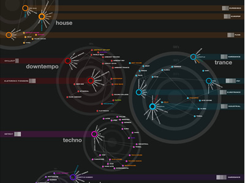

I was listening to the Hype Machine this morning - and much to my surprise - Camille Saints-Saen's Symphony #3 started
playing. This piece is also known as the 'organ symphony' and to me is
one of the most exciting pieces of music of all time - this time, at the
end of the piece, the final huge organ chord seemed to repeat itself -
and then, much to my surprise it was joined by vocalist Win Butler - we
had seemlessly segued into the song 'intervention' by The Arcade
Fire. It made my day. The two songs were put together by Howard Who. Well done.
Friday Jan 26, 2007
 iTunes
is the most popular way for people to play and organize their
music. Hundreds of millions of people use iTunes. They use
it because it has lots of good tools for organizing music, and works
well with the ubiquitous iPod. One thing that iTunes does
not do very well is give new music recommendations. The 'Just for
you' recommender only uses your iTunes purchases to make recommendations
which for most people is just too slim of a dataset to build a
recommendation around, and for many, the songs that they purchase
through the iTunes store are the songs by artists that only want to try a
song or two from, if they really like the artist, they'll go to the
local shop and by the whole album.
iTunes
is the most popular way for people to play and organize their
music. Hundreds of millions of people use iTunes. They use
it because it has lots of good tools for organizing music, and works
well with the ubiquitous iPod. One thing that iTunes does
not do very well is give new music recommendations. The 'Just for
you' recommender only uses your iTunes purchases to make recommendations
which for most people is just too slim of a dataset to build a
recommendation around, and for many, the songs that they purchase
through the iTunes store are the songs by artists that only want to try a
song or two from, if they really like the artist, they'll go to the
local shop and by the whole album.
This combination of ubiquity and poor recommendations has driven a whole industry of music recommenders that work with iTunes - these recommenders run as iTunes plugins, sidebars and tag-alongs. When you start iTunes, these programs also start up - they keep tabs on what you are listening to, and use this data to generate recommendations for you. These recommenders are like remoras (aka suckerfish) to the iTunes shark. By attaching itself to a host such as a shark, a remora benefits by using the host as transport and protection and also feeds on materials dropped by the host. The recommender remoras benefit from iTunes reach onto millions of desktops and feed on the opportunities left by iTunes poor recommender.
The problem for me is that when I start iTunes, a half-dozen recommenders start running too - there's last.fm, iLike, qloud, goombah, musicmobs, and mystrands - all ready to give me a recommendation. I can hear the remora sucking sound (it sounds like a CPU fan going on, trying to cool an overloaded CPU). Some of these recommenders are not so well behaved: MyStrands is using 150 mb of memory, iLike is using a whopping 350 mb of memory - Goombah is using 20% of my CPU. Add to that some questionable UI decisions - iLike attaches its UI to the side of iTunes, QLoud sticks their own button into iTunes itself (last.fm's scrobbler is a notable exception, it just sits quietly and invisibly in the toolbar where you can completely forget about it).
So the question is - is the remora model - the best way
for a recommender to survive? To latch onto the big shark and feed on
the scraps (and hope the shark doesn't take offense)? Or is it better to
find your own niche independent of the big fish - such as the hype
machine and Music IP are doing?
Thursday Jan 25, 2007
Many Eyes
is an experiment in applying the wisdom of the crowds to data
visualization. If you have an interesting set of data, you can
upload it to Many Eyes and use various tools to create
visualizations of this data. The goal of Many Eyes is to encourage
sharing and conversation around visualizations. It's an
interesting idea, with some interesting products so far:
Wednesday Jan 24, 2007
The Cscout trend blog has an overview and quick comparison of 8 music recommenders:
Nothing new for anyone following this space, and quite a number of the details are wrong. I guess that's an indication of how confusing the music recommender space is. Lots of sites, lots of features that look similar between the sites. How do you tell which music recommender is better?
Nothing new for anyone following this space, and quite a number of the details are wrong. I guess that's an indication of how confusing the music recommender space is. Lots of sites, lots of features that look similar between the sites. How do you tell which music recommender is better?
Tuesday Jan 23, 2007
Spotify
is a stealth-mode music recommendation company based in Luxembourg.
They say that they "will give you the music you want, when you
want it.Your choice is just a search box or a friendly recommendation
away. You'll be amazed by the speed and control you have with
Spotify."
And in their Jobs section they say "At Spotify work is about creating easy intuitive media distribution and advertising services. We do that by solving hard computer science problems as well as making the services easy-to-use. Our projects include everything from creating algorithms that make the advertising relevant to users and valuable to marketers, to designing a new interesting front page for our website. The core of the company lies in engineering – we're a data driven company. Our engineers work on problems in a number of areas, including distributed systems, information retrieval, algorithms, UI and scalability issues when dealing with huge amounts of data and a rapidly growing user base."
Not enough info there to figure out what they are going to do to separate themselves from the pack ... so we'll have to wait and see. In the meantime, there are some flickr images to browse and ponder: Spotify at flickr
There are lots of resources scattered around the web that are useful
for researchers in the field of Music Resource Retrieval. There
are a number of attempts to organize them (including the Tools We Use page). Probably one of the best collections of MIR resources can be found on Cory McKay's academic links
page. Cory has collected hundreds of relevant resources onto a
single page, covering a wide variety of topics from signal processing,
pattern recognition, music theory, to music references, and data
sets. It's a great catalog of sites important to MIR. If you
are an MIR researcher, this page should be a bookmark in your browser.
Monday Jan 22, 2007
iLike has a nifty little 'name that tune' game ...
its kind of fun ... I like the idea of sites like iLike adding
features around their data like 'Name that tune' - it makes music
exploration fun - I hope to see more of this.
Wednesday Jan 17, 2007
Streampad is a web music player. Its not just a music player that plays in your browser. Its a music player that plays the web. With streampad you can type in the name of an artist and streampad will return a list of songs by the artist that are on the web. Click on a song to hear it, click on 'add all' to play them all. Interested in listening to a new band like Deerhoof? Streampad knows of at least 50 songs that you can listen to. If you would like to learn a bit more about a particular song, click on the 'read' link - this will bring you to a review of the track (via the hypemachine).
Streampad hooks up to several music sites on the web. It hooks up to Mp3Tunes,
the music locker so you can listen to your music wherever you go.
It will stuff your listening data into your last.fm account (if you
give them your last.fm login info). It will show streampad
listeners on a google map (everyone has to have a google map mashup
nowadays apparently). It will show you up coming concerts (although it
didn't seem to care about where I lived, so I was seeing concert info
for shows that were thousands of miles away).
Streampad can also be used to give you access to your own music collection when you are on the road. Streampad has a little server that runs on your computer that will serve up your music collection so whereever you are you can listen to your home music collection. For those of us that have terrabyte-sized music collections that don't fit on an iPod or a laptop.
Streampad is another example of the universal music player
- it lets you play music from any source - helping you to play
your music where ever you are (as long as you are connected to the web).
However, as with the current crop of universal players, Streampad
doesn't offer much in the way of tools for helping you find new music -
you have to already know that you want to listen to some Deerhoof when
you get to Streampad. I'm hoping the next generation of web-based
music players will start to incorporate some music discovery tools.
Here are my current favorite podcasts:
- The Pandora podcast - An excellent ongoing series about music performance techniques . The latest is about guitar effects. I learned about tremolo, chorus, distortion and wawa in just 8 minutes.
- TalkCrunch - Great interviews with the thought leaders of web 2.0. The recent podcast: Talk with Yahoo Music Execs about the fate of DRM - is a 'must listen' for anyone interested in the Music 2.0 space.
- Java Posse
- Nothing but Java - 4 really smart guys talking about Java - its a
great way to keep on top of what is happening in the Java world.
Sunday Jan 14, 2007
In anticipation of the soon to be released album Friend Opportunity, I've been listening to a lot of music by Deerhoof.
This is quirky stuff to be sure - but it is growing on me. The neat
thing is that I can listen to Deerhoof all day to let it grow on me for
free and it is all perfectly legal. Here's how:

- Generate a link to a playlist (in XSPF format) of Deerhoof's top 50 tracks using last.fm's web services. The link is: http://ws.audioscrobbler.com/1.0/artist/Deerhoof/toptracks.xspf.
- Plug this XSPF url into the XspfResolver and tell it to 'Napsterize'. This generates a pretty printed version of the playlist with links into the Napster catalog to play the songs (remember that Napster lets you listen to each song in their million+ song catalog 5 times for free). At the bottom of this page is a Napster link for the entire playlist. Click on that link to start listening to the top 50 Deerhoof songs. (Or just click here if you are a bit lazy).
Saturday Jan 13, 2007
There's music scattered all over the web. Its in mp3blogs, on
MySpace pages, in deep databases like eMusic, Napster or Rhapsody. Its
in music lockers like mp3tunes. In addition, there are all sorts
of sites such as MusicMobs, WebJay or ArtOfTheMix
where you can find interesting playlists. But even though
there's an abundance of music out there on the web, its not so easy to
hear it. It is hard to share playlists, its hard to gather up a
good collection of this music. But things are going to get
better. First, there's the MusicDNS
song id, that gives us a way to unambiguously identify a song from the
audio and clean up the metadata - then there's the MusicBrainz music metadatabase that gives us all sorts of interesting data about the music, and then there's XSPF,
an XML-based playlist format. Combine these three technologies
and we start to get a web where we can listen to music, share
music, pass around playlists. Imagine a future where any
time that you see the name of a song on the web you can hear the song -
anytime someone gives you a list of songs in a playlist you can hear the
playlist. This future where music flows like water
is just around the corner. Soon we will see web enabled music
players that will use song ids, MusicBrainz and XSPF to give us just
that. One of the first universal players is Grabb.it
- Grabb.it (in invitation-only mode) will resolve playlists to songs
located on the web. It's early days for this sort of thing, but I
think that these universal players and song resolvers like Grabb.it (and my humble attempt at an XspfResolver)
are going to be a big part of the emerging celestial
jukebox. Grabb.it looks pretty cool, I love the URL, I love
the logo, and I love the idea - I can't wait to see it go live.
Friday Jan 12, 2007
Most
of the new tools for music discovery revolve around collaborative
filtering - relying on the wisdom of the crowds - but sometimes crowds
turn into mobs and are not always so wise. CF systems have a
number of well known problems: cold-start issues, popularity bias,
inertia. One new music discovery tool that rejects the wisdom of
the crowds model is CriticalMetrics. CriticalMetrics makes
recommendations based on what the experts are saying. They mine
the ratings of dozens of music review publications (from the New York
Times and the Rolling Stones to many small pubs like Paper Thin Walls and URB)
and recommend music that has received rave reviews.
CriticalMetrics lets you listen to the songs, filter them, put links to
them in your blog: (Here's an artist I found that I liked: Art Brut).
It's a pretty cool site - and a great way to find new music.
Everyone I know is pretty jazzed about the new iPhone. It is a pretty nice looking device. I was excited to hear that it was running OS X - perhaps we'd finally have an iPod with an SDK - an iPod that we could write software for. Alas, that is not the case - only Apple can put applications on the iPhone. Sure, Apple is the master of design but there are lots of really interesting ideas about new ways to interact with a music collection. Wouldn't it be nice if we could put these interfaces on an iPod? Here are some nifty ones:
Update - Cory's comparison of the iPhone to a roach motel is quite apt.
Musicream

Music Rainbow

Musicovery:

Radio Protector
Electronic Boom

TuneGlue

Search Inside the Music

Thursday Jan 11, 2007
VisualComplexity is highlighting a project called Electronic Boom
which is a 7-day interactive event that guides the visitor through the
world of electronic music. The diagram represented here is a concept map
of Electronic Boom, where
most kinds of electronic music (and relevant sub-categories) are linked
together and mapped according to its beginning.

This reminds me of Ishkur's Guide to Electronic Music.
Wednesday Jan 10, 2007
Music 2.0 - the annual gathering of music industry leaders is
gearing up for its meeting at the end of this month in Los
Angeles. The agenda
shows some interesting sessions. The session called "Name that tune:
Grabbing customers and Fighting Piracy with Music ID and Taste-Matching"
looks particularly interesting with a panel containing
representatives from All Music Guide, Pandora, Gracenote and MusicIP.
This blog copyright 2010 by plamere